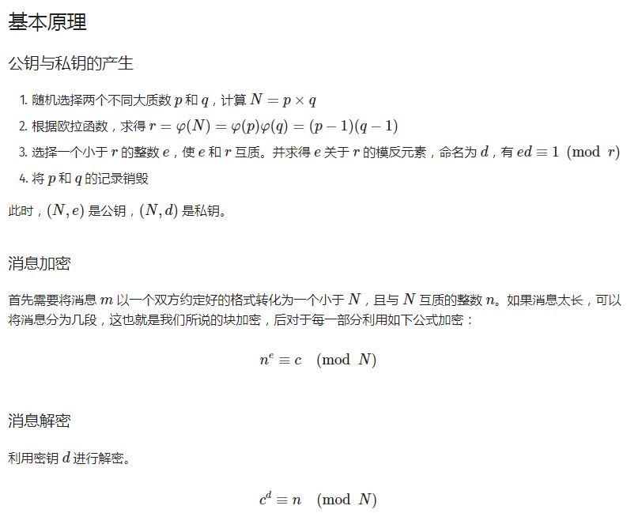
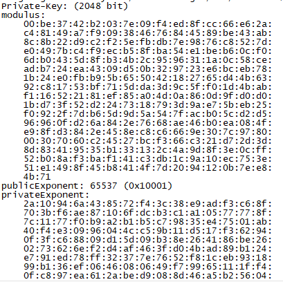
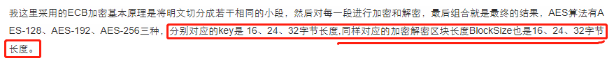
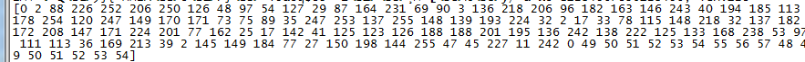
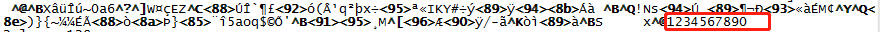
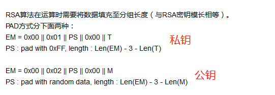
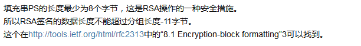
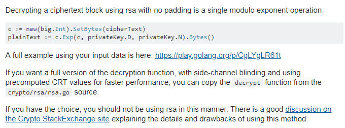
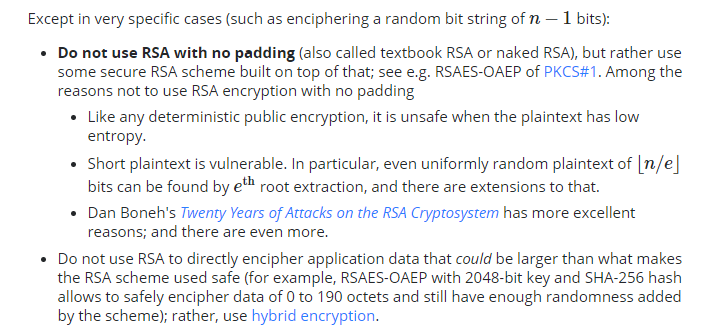

RSA加密解密
因为项目需要，最近做一个RSA加密解密的接口，使用Go进行开发，接口使用jsonrpc，go 对RSA加密解密有很好的支持，不过由于受限于底层单片机，所以上层应用需要做一些稍微的调整。
一、概要
RSA是一种非对称加密算法，什么是非对称加密算法呢，那就是公钥、私钥可互相进行加密解密：公钥加密—私钥解密，私钥加密—公钥解密。
了解RSA算法的实现原理，可参考：非对称加密过程详解（基于RSA非对称加密算法实现）
RSA算法的基本原理（截图的来源没有保留链接，若侵权请直接告诉我，我会直接删除的）：

三、RSA一些名词的解释
什么是PKCS#1，PKCS（公钥密码标准），而#1就是RSA的标准。
PEM文件，也就是公私钥的编码格式。
RSA算法的原理：RSA算法详解，从这篇博客主要是提取出RSA算法的公式。
1 | C=(P^e)%n |
N是公钥私钥共同使用的，其为模数。另外还有公钥的指数E，私钥的指数E。
公钥的指数一般是65537，私钥的指数则是一个极大的数，想想一个极大的数作为指数，计算时间是会耗费很长时间的。故公钥加密解密都很快，私钥则会慢很多
二、Go中的RSA加密解密
RSA标准是通过公钥加密，私钥解密 ，没有私钥加密，公钥解密。为什么会这样呢？
Go设计库一般会严格按照标准来进行设计（在很多地方都见过相似做法），那是RSA标准中没有后一种情况的使用场景吗？其实是有的，只不过这个过程不要加密解密，而是RSA签名与验签。所以按照标准，RSA标准库也就不会有私钥加密，公钥解密的方法了。
这个问题想想应该是很多人的问题了，那么在Google上进行搜索了下，还是发现了解决方法。
https://github.com/wenzhenxi/gorsa
库中实现了公钥加解密的方法。
还有其他解决方法吗？是有的，在Google上进行搜索就可以找到，记得还有人使用CGO调用C库来解决。
四、Go RSA库的使用
标准库的使用者很多，博客也很多，这里不做多的介绍，放上一个博主的链接。
五、项目中的问题
此处，由于我的问题比较特殊，所以到此并没完全解决我的问题，还记得上面说的RSA指数与模数的东西吗，因为上层是与stm32进行通信，stm32RSA的库是需要自己手动将指数与模数填入结构体中的，那么上层就应该将生成的私钥进行分解开来，得到stm32所需要的指数和模数，那么怎么得到这些数据呢。
我使用的方法是借用OpenSSL，理论上来说像Python就可以做到，但是我并不想将事情复杂化，直接借用现有的工具是最省事的。
参考：如何用 openssl 生成RSA双密匙；签名证书；加密文件邮件
1 | openssl rsa -in private.pem -text -noout |
-noout : 表示不显示密钥
运行结果：

modulus、publicExponent、privateExponent，这三个数就是我们所需要的数据（publicExponent一般算法会设为65537）。
那么此处就很简单的进行字符串截取就可以做到拿出这三个数据了。
那通过库可以获取到这些数据吗？
答案：那是当然可以的，因为秘钥就是由这些大数组成的，以之前提到的库为例，在结构体
RSASecurity中，prikey.D即为privateExponent，prikey.N即为modulus。
六、AES加密解密
既然提到了RSA，不对称加密算法了，那么也去了解了解AES对称加密算法吧。
Go的实现可参考贴出来的链接，不过此处给出我遇到的一个问题。
截取自博客中的原文：

标记出来的话，其实是有问题的，AES算法，区块长度是固定的，为128bit。
摘抄自百度百科：严格地说，AES和Rijndael加密法并不完全一样（虽然在实际应用中二者可以互换），因为Rijndael加密法可以支持更大范围的区块和密钥长度：AES的区块长度固定为128比特，密钥长度则可以是128、192、256比特；而Rijndael使用的密钥和区块长度可以是32位的整数倍，以128位为下限，256比特为上限。加密过程中使用的密钥是由Rijndael密钥生成方案产生。
在golang的源码设计中也可以证明这点，其blocksize设定为const，其值为16(byte)，显然，标准库是并不允许使用者去修改这个值的，那么AES-128/192/256，其实是针对的密钥长度来说的。
另外，使用go AES库需要注意的是，go aes输入的密钥不满足16、24、32的要求，会直接返回错误，其并没有设计补全机制，需要自己实现。
数据块长度不足128bit，其同样也需要补全；很遗憾的是go依然没有帮助自动补全。补全方式有多种，一般常见的是zeropadding，pkcs5padding，pkcs7padding。
参考golang AES/ECB/PKCS5 加密解密 url-safe-base64
博客使用的是pkcs5padding，这里补上zeropadding。
1 | func ZeroPadding(ciphertext []byte, blockSize int) []byte { |
附上我写的填充key的代码：
1 | func KeyPadding(key string) (keyByte []byte) { |
七、使用的方法
bytes.Join将byte数组的数组进行组合
1 | bytes.Join(pBytes, []byte("")) |
第二个参数表示数组间用什么去间隔
将一个大数按大小端转换为byte数组模式
binary.BigEndian.PutUint64
https://blog.csdn.net/coledaddy/article/details/71195528
返回子串在字符串中的索引
例如strings.Index(str, “modules”)，返回的是开始出现"modules"的位置，即"m"。
将数组转换为以“,”分割的字符串
1 | strings.Replace(strings.Trim(fmt.Sprint(byteArr),"[]"), " ", ",", -1) |
将十六进制的字符，转换为整数
1 | strconv.ParseUint(data, 16, 8) |
data：字符，16：进制，8：转换数据的大小，8则是8bit。
OpenSSL
1）生成RSA私钥：
1 | genrsa -out rsa_private_key.pem 1024 |
2）把RSA私钥转换成PKCS8格式
1 | pkcs8 -topk8 -inform PEM -in rsa_private_key.pem -outform PEM –nocrypt |
- 生成RSA公钥
1 | rsa -in rsa_private_key.pem -pubout -out rsa_public_key.pem |
将文件数据转为一行字符串：
awk BEGIN{RS=EOF}’{gsub(/\n/,"_");print}’ file
2018年8月22日17:38:32
本来以为rsa加密解密的事都要翻篇了，谁知道底层突然和我说交互出了问题，stm32使用的RSA是官方库，Go使用的是官方库，理论上不应该有什么问题的，但实际上就是出了问题。
问题是这样的，Go使用私钥加密，stm32无法使用公钥进行解密；stm32使用私钥加密，Go无法进行公钥解密。但双方公钥加密，对方都可以进行私钥解密。
然后花了一天的时间的去细细的琢磨这个事，觉得这个过程还是很有意思的。
首先，则是两方都去检查源码是否出现使用错误，在互相review代码确认无误，这样不会造成总是去怀疑对方的代码，至少在使用上都是按照官方文档进行的操作。
第二步，再三确认私钥加密，公钥解密这个种非标用法是可行的。因为RSA签名和验证过程是包含有私钥加密，公钥解密的，这个点是不需要再去考虑正确性的。
第三步，双方通讯无法通过对方，那么很自然的就会想到，先抛弃掉对方，使用另外一种标准库，或者是语言的标准库来佐证自己的库的正确性，这里我选择的是使用OpenSSL的接口，使用CGo，调用的OpenSSL的接口，放上借用的库链接https://github.com/dgkang/rsa，最终测试结果是与Go库中的结果是一样的。我这里用的库是https://github.com/wenzhenxi/gorsa，因为官方库并没有将RSA私钥加密暴露出来，若需要使用的话就需要自己动手了。
第四步，我单方面的证明了Go库没有问题，此时怀疑的方向就只能是
stm32官方库出了问题，哪里出了问题呢。偶然地，在使用https://github.com/dgkang/rsa库时，OpenSSL上报错信息是：error:0407006A:rsa routines:RSA_padding_check_PKCS1_type_1:block type is not 01。这个报错信息很关键，stm32库上说的是PKCS1 padding方式，那现在OpenSSL又报出了type方式不同，那只能说明这是有点问题。使用了库的nopadding方式，可以解密出来的数据都打印出来（PKCS1会直接返回数据，填充的信息会直接过滤掉）。

在调试时，这些数据也是一头雾水的，实际打印的信息是下面的，我实际想要的是后面的数字，这个byte数组和string乱码看的也是脑袋大，为了搞清楚这个，需要了解加密填充信息。

以下介绍填充方式的知识皆参考自：
RSA_PKCS1_PADDING
来自 <https://www.douban.com/note/338531480/>
padding的三种方式：
RSA加密常用的填充方式有下面3种：
1.RSA_PKCS1_PADDING 填充模式，最常用的模式
要求:
输入：必须 比 RSA 钥模长(modulus) 短至少11个字节, 也就是 RSA_size(rsa) – 11
如果输入的明文过长，必须切割，然后填充
输出：和modulus一样长
2.RSA_PKCS1_OAEP_PADDING
输入：RSA_size(rsa) – 41
输出：和modulus一样长
3.RSA_NO_PADDING 不填充
输入：可以和RSA钥模长一样长（因为不填充，必须要填入模长），如果输入的明文过长，必须切割，然后填充
输出：和modulus一样长
其中PKCS1需要遵守的填充规则是

可以看到数据组成方式是有着固定的规则的。
那再看看我们从
stm32解密出来的数据，可以看到这个数据有点问题，明明是私钥加的密，开头确实0 2，大概率这里有问题。于是我在我的私钥加密中，将这位修改成2，将数据发给
stm32,32那边随即便将数据返回出来了。还有一个问题，那就是为什么PKCS标准需要留11个字节呢。

这11个字长那么大概率就是为了增加秘钥安全性所预留的随机数了。
至此，算是终于将问题找到，并找到解决的办法了，解决问题大概是经历了那几个步骤，中间夹杂着各种尝试，当然写出来的却是每一步走得都很正确，中间与人沟通的成本不低，沟通愉快的时候解决问题的方法就会非常的多。
Golang实现Nopadding模式
https://stackoverflow.com/questions/40870178/golang-rsa-decrypt-no-padding

提供解决方法的人特意提醒了，若用户有选择，请尽量不要使用这种填充方式，并给出了提供意见的链接。（不得不说，做事真的严谨）
https://crypto.stackexchange.com/a/15184
我这里直接截取出结论来，具体如何得出结论的，还是希望大家能够读一读原文。

不要使用RSA不填充方式，其是一种裸RSA加密方式，
① 在任何公钥加密场合，当明文具有低熵（低混乱度）时，它是不安全的。
② 短明文易受到攻击。
其中，作者还建议为了保证算法的加密性，那么就应该保护算法的随机性，加密的数据不应该太多，2048bit key，最好只加密0-190字节的数据，如果不能满足，应该考虑使用混合加密算法。
本文标题：RSA加密解密
文章作者：小师
发布时间：2018-07-29
最后更新：2022-05-04
原始链接：chunlife.top/2018/07/29/RSA加密解密/
版权声明：本站所有文章均采用知识共享署名4.0国际许可协议进行许可